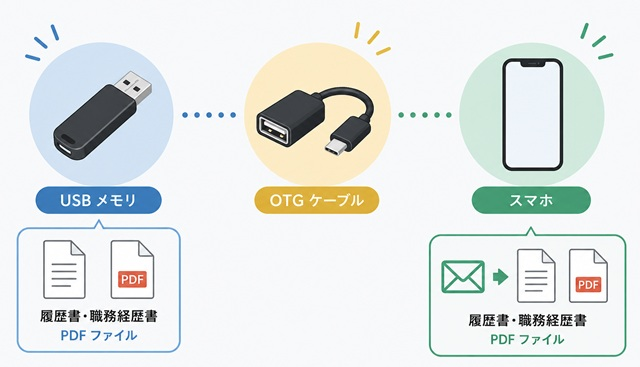

OTGケーブルとは？パソコンで作った履歴書をスマホから送る便利な方法
※この記事は、一般的なAndroidスマートフォンとiPhoneの動作をもとに説明しています。機種やOSのバージョンによって、画面や名称、使えるかどうかが異なる場合があります。購入や接続の前に、お使いの機種の説明書や公式の案内もあわせて確認してください。
履歴書や職務経歴書は、パソコンで作成するよう求められる企業も多くあります。
しかし、学習環境やご自宅の通信環境によっては、以下のような状況で困っている方も少なくありません。
- 「古いパソコンでWordやExcelは使えるけれど、インターネットにはつながっていない」
- 「メールはスマートフォンしか使っていない（設定がわからない）」
- 「PDFにした履歴書を、どうやってスマホへ移して企業へ送ればいいか分からない」
そんなときに役立つのが、OTGケーブルです。
OTGケーブルを使えば、USBメモリに保存した履歴書や職務経歴書（PDF）をスマートフォンで開き、そのままメールに添付して企業へ送信できるようになります。
OTGケーブルはこんな方におすすめ
この方法は、次のような状況で就職活動を進めている方に特におすすめです。
- パソコンで書類は作れるが、そのパソコンはインターネットに接続していない
- パソコンではメールの送受信設定ができていない（ウェブメールも使えない）
- 普段使い慣れているスマートフォンのメールアプリから応募書類を送りたい
パソコンで書類を完成させてPDF保存し、USBメモリへコピーしておけば、あとはOTGケーブルを使ってスマートフォンへ取り込むだけで、送信準備が整います。
「パソコンで書類を作り、スマホで送る」という方法は、実は合理的です。
パソコンの広い画面で誤字脱字なく書類を仕上げ、使い慣れたスマホのメール機能で確実に送信する。
この「橋渡し」をしてくれるのがOTGケーブルなのです。
OTGケーブルとは？
OTG（On-The-Go）ケーブルとは、AndroidスマートフォンやUSB Type-C対応のiPhoneで、USBメモリなどを直接接続するための変換ケーブルです。
通常、スマートフォンにはUSBメモリを直接差し込むことはできません。
OTGケーブルを間に挟むことで、スマートフォンがUSBメモリを「外部保存装置」として認識し、中のファイルを開いたりコピーしたりできるようになります。
家電量販店などで探す際は、「OTG対応」や「USBホスト機能対応」と表記されているものを選びましょう。

▲ PCで作成したデータを、物理的なケーブル経由でスマホへ移動させます
OTGケーブルには「2つの形」がある
お店やネット通販では、OTGケーブルは大きく2つの形で売られています。
どちらも役割は同じなので、この記事ではまとめて「OTGケーブル」と呼びます。
売り場では「OTGアダプタ」「OTG変換アダプタ」といった名前で書かれていることもありますが、同じ仲間です。
| 形 | 見た目 | 特長 | 注意点 |
|---|---|---|---|
| ケーブル型 | 短い線がついていて、片側がスマホの端子、反対側がUSBメモリを差す口になっている | 線があるので動かしやすく、スマホの端子に負担がかかりにくい。ケースを付けたままでも使いやすい | アダプタ型より少しかさばる。価格がやや高めになる傾向がある |
| アダプタ型 | 線がなく、小さな変換部品になっている。スマホの端子に直接差し込み、反対側にUSBメモリを差す | 小さくて軽く、持ち運びやすい。価格が安く、100円ショップではこちらが主流 | USBメモリがスマホから直接出る形になる。ケースの厚みで端子の奥まで届かないことがある |
アダプタ型は手軽ですが、USBメモリを差した状態でスマホを持ち上げたり、振ったりすると、スマホの端子に力がかかります。
使うときは、スマホを机の上に置いたまま、画面を操作するのがおすすめです。
ケースが厚い方や、USBメモリが大きい方は、ケーブル型のほうが安心です。
どちらを選ぶ場合も、「OTG対応」や「データ転送対応」の表記があるかを、パッケージで確認しましょう。
購入する前に確認したい3つのこと
OTGケーブルは、どれを買っても使えるわけではありません。
買ってから「差し込めなかった」「認識されなかった」とならないよう、次の3点を先に確認しましょう。
- スマホの端子の形： 充電するときに差し込む穴の形です。USB Type-C、micro-USB（古いAndroid）、Lightning（古いiPhone）などがあります。
- USBメモリの形： 四角くて平たい「Type-A」が一般的です。Type-Cの形をしたUSBメモリもあります。
- スマホがUSBメモリの接続に対応しているか： 機種名と「OTG」を組み合わせて検索するか、説明書を見て確認します。機種によっては、非対応のものもあります。
スマホの種類ごとの目安は、次のとおりです。
| スマホの種類 | 必要なもの | 補足 |
|---|---|---|
| Android（USB Type-C） | Type-C用のOTGケーブル | 多くの機種で使えますが、機種によっては非対応です |
| Android（micro-USB） | micro-USB用のOTGケーブル | 古い機種に多く、端子の形が合わないと使えません |
| iPhone 15以降（USB-C） | Type-C用のOTGケーブル | 「ファイル」アプリから中身を開きます |
| iPhone 14以前（Lightning） | Lightning対応の専用のもの（Apple純正の「USBカメラアダプタ」など） | Android向けの「OTG」と書かれた商品は使えないことがあります |
端子の形は、言葉で説明するより、見せるほうが確実です。
スマホの充電する穴と、USBメモリの差し込み口の写真を撮ってから店に行き、「この2つをつなぎたい」と店員さんに見せると、間違えた商品を買うことがほとんどなくなります。
パソコン初心者の方ほど、この一手間が失敗を防ぎます。
OTGケーブルを使う流れ
手順はとてもシンプルで、ITに詳しくない方でもすぐに実行できます。
パソコンで履歴書・職務経歴書を作成する
必ず「PDF形式」で保存する
PDFファイルをUSBメモリへコピーする
USBメモリをOTGケーブル経由でスマホに繋ぐ
スマホのファイル管理アプリでPDFを確認する
メールに添付して企業へ送信する
100円ショップなどで販売されている「充電専用」のUSBケーブルでは、データのやり取りを行うことはできません。
必ず「データ転送対応」または「OTG対応」と明記されているOTGケーブル（ケーブル型・アダプタ型のどちらでも）を選んでください。
各ステップでつまずきやすいポイント
PDFに保存するとき
Wordで作った場合は、[ファイル]→[名前を付けて保存]を選び、「ファイルの種類」で「PDF」を選んで保存します。
Wordのファイルのまま送らず、PDFにするのは、スマホや相手のパソコンで開いたときに、レイアウトが崩れにくいからです。
保存したら、一度PDFを開き、改ページや文字の位置に問題がないかを確認しましょう。
スマホがUSBメモリを認識しないとき
次の順番で試してみてください。
- USBメモリとケーブルを、一度抜いてから、しっかり差し直す。
- スマホにケースを付けているときは、一度外して試す。アダプタ型は、ケースの厚みで端子の奥まで届かないことがあります。
- 別のUSBメモリで試して、メモリ側の問題かどうかを確認する。
- ケーブルが「充電専用」ではないか確認する。
- USBメモリの形式を確認する。一般的な市販品は、スマホで使いやすい形式になっていることが多いですが、パソコン専用の形式で使っていると、認識されない場合があります。
つないだのに、ファイルが見つからないとき
USBメモリの中身は、スマホの「ファイル」アプリ（機種によって名前は異なります）の中に、USBメモリ名や「USBストレージ」といった名前で表示されます。
メールアプリの中からではなく、先にファイルアプリで中身を確認しましょう。
価格はどれくらい？
OTGケーブルは、家電量販店やネット通販で1,000円前後で購入できます。
最近は100円ショップでも、小さなアダプタ型のOTGケーブルが主流として販売されています。
ただし、100円ショップの商品は、スマホ側の端子の形や、データ転送に対応しているかどうかを、パッケージの表記でしっかり確認してください。
価格も高くないため、1本持っておけば就職活動だけでなく、スマホで撮った写真をパソコンに移したり、バックアップを取ったりする際にも活用できる便利なアイテムです。
スマホに取り込んだ後、必ず一度PDFを開いてみてください。
意図した通りに文字が表示されているか、保存するファイル（氏名や日付）を間違えていないか。
企業が実際に見る画面を自分のスマホで確認できるのが、この方法の隠れたメリットでもあります。
応募書類をメールで送るときの注意
書類を無事にスマホへ移せても、送り方で印象が変わったり、ミスにつながったりします。
送信前に次の点を確認しましょう。
企業の指示を、最優先にする
募集要項に、ファイル形式、ファイル名のルール、パスワードの設定などの指示がある場合は、必ず従ってください。
この記事で説明する内容は一般的な目安です。
ファイル名は「誰の・何の書類か」が分かる名前に
「履歴書_山田太郎.pdf」のように、書類の種類と氏名を入れます。
企業は多くの応募書類を受け取るため、「新規PDF.pdf」のような名前では、誰のものか分かりません。
ファイルの容量に気をつける
顔写真が入った履歴書は、ファイルの容量が大きくなりやすいです。
企業から容量の指定があれば、その範囲に収めてください。
指定がなくても、数MB以内に収めておくと安心です。
宛先・件名・本文を整える
宛先のメールアドレスは、募集要項と一字ずつ見比べて確認します。
1文字の違いで、別の人に個人情報が届いてしまいます。
件名と本文は、次のような書き方が基本です。
株式会社○○
採用ご担当者様
初めてご連絡いたします。山田太郎と申します。
貴社の事務職の募集を拝見し、応募のためご連絡いたしました。
履歴書と職務経歴書をPDFで添付いたします。
ご確認のほど、よろしくお願い申し上げます。
山田太郎
電話：000-0000-0000
メール：example@example.com
差出人の名前を確認する
スマホのメールアプリは、差出人の名前がニックネームや英字のままになっていることがあります。
受け取った採用担当者が、誰からのメールか分からないと困ります。
送信前に、差出人名が氏名になっているかを確認してください。
添付し忘れに注意し、自分宛てにテスト送信する
「添付しました」と書いたのに、ファイルが付いていなかった、という失敗はよくあります。
送信を押す前に、添付のマークとファイル名が表示されているか確認しましょう。
不安なときは、まず自分のメールアドレスに送り、届いた添付ファイルを開いて確認してから、企業へ送る方法が確実です。
送信後は、個人情報を残さない
履歴書には、住所、電話番号、顔写真などの個人情報が入っています。
送信が終わったら、USBメモリやスマホに残った不要なコピーは削除しましょう。
USBメモリは小さく、紛失しやすいため、持ち歩く場合は特に注意してください。
また、他人のスマホや共用のパソコンに書類を残さないようにしましょう。
送信ボタンを押す前に、「①宛先 ②添付ファイル ③差出人名」の3つだけは、声に出して確認してください。
応募書類は、内容がどれだけ良くても、送り方でつまずくと、相手に伝わりません。
落ち着いて、1つずつ確認する。
この習慣が、仕事でメールを送るときの基本にもなります。
OTGケーブル以外の方法も知っておこう
OTGケーブルは便利ですが、唯一の方法ではありません。
状況によっては、次の方法も選べます。
- データ転送対応のUSBケーブルで、パソコンとAndroidスマホを直接つなぐ： スマホの画面に「ファイル転送」などの選択が出たら、それを選びます。USBメモリが不要です。
- スマホのテザリングで、パソコンをインターネットにつなぐ： パソコンでWebメールが使えるなら、そのまま送信できます。ただし、通信量が増えるため、契約内容を確認してください。
OTGケーブルを買う前に、お持ちの機器で別の方法が使えないかも、あわせて考えてみましょう。
いちばん手間が少なく、確実な方法を選ぶことが大切です。
よくある質問
USBメモリをつないでも、スマホが反応しません。
ケーブルが充電専用でないか、スマホがOTGに対応しているか、USBメモリを別のものに替えても同じかを確認してください。順番は、本文の「スマホがUSBメモリを認識しないとき」を参考にしてください。
iPhoneでも使えますか？
USB-C搭載のiPhone 15以降は、Type-C用のOTGケーブルでUSBメモリを使えます。Lightning搭載のiPhoneは、Lightning対応の専用のものが必要です。購入前に、お使いのiPhoneの機種を確認してください。
ケーブル型とアダプタ型、初心者はどちらを選べばいいですか？
ケースを付けている方や、USBメモリが大きい方は、ケーブル型が安心です。手軽さと価格を重視するなら、アダプタ型でも問題ありませんが、使うときはスマホを机に置いたままにしてください。
Wordのまま送ってはいけませんか？
企業がWordでの提出を指定している場合は、その指示に従ってください。指定がなければ、レイアウトが崩れにくいPDFがおすすめです。
まとめ：道具を賢く使って「伝わる書類」を届けよう
OTGケーブルは、インターネット環境に左右されず、パソコンの高い作成能力とスマートフォンの高い通信能力を繋いでくれる便利な「橋渡し役」です。
- PCはオフラインでも、USBメモリとOTGケーブルがあれば送信できる。
- PDF形式での送信は、実務上のマナーとしても正解。
- 「充電専用」ではなく「データ転送・OTG対応」のものを選ぶ。
- OTGケーブルにはケーブル型とアダプタ型がある。100円ショップはアダプタ型が主流。
- 買う前に、スマホの端子・USBメモリの形・OTG対応の3つを確認する。
- 送る前に、宛先・添付ファイル・差出人名を確認する。
- 送信後は、USBメモリやスマホに残った個人情報を削除する。
「パソコンのメール設定ができないから送れない」と諦める必要はありません。
身近な道具を賢く使って、あなたが時間をかけて作った大切な履歴書を、確実に志望企業へ届けましょう。
あなたの就職・転職活動が実を結ぶよう、心から応援しています。